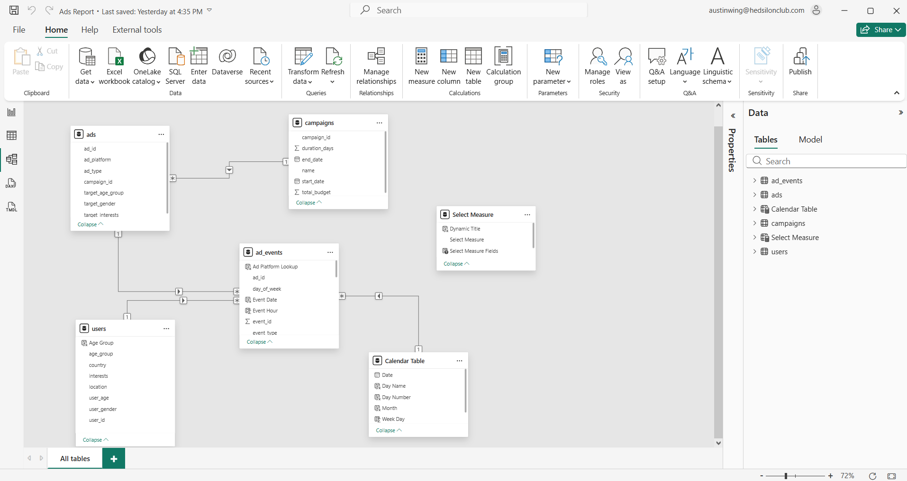

Meta Marketing Performance
Business Intelligence Analyst (Contract) | Funnel & Efficiency Analysis
Role & Engagement Context
I worked as a Business Intelligence Analyst (Contract) supporting Meta’s marketing teams. Meta provided a structured dataset containing paid media performance across Facebook and Instagram and asked for a dashboard that could help stakeholders understand campaign effectiveness, efficiency, and risk at scale.
The objective was not ad-level optimization, but decision support:
- Identify where performance breaks down in the funnel.
- Determine which metrics meaningfully explain outcomes.
- Enable marketing teams to allocate spend based on business impact, not surface-level engagement.
Data Structure & Schema
The dataset included volume metrics (Impressions, Clicks, Purchases) and efficiency metrics modeled into DAX measures. I ensured funnel integrity by mathematically tying rates to base counts, creating a single source of truth.

Snapshot of the dataset containing performance signals across dimensions.
Dashboard Design Philosophy
The dashboard was intentionally designed as a diagnostic tool. Key principles included treating metrics as a system (not isolated KPIs) and forcing comparison between upstream signals (engagement) and downstream outcomes (purchases).
The data model schema used to link performance metrics with campaign dimensions.
Key Business Questions & Findings
Quantified Impact & Conclusion
Using the modeled funnel, I identified that a 1 percentage-point improvement in conversion rate would generate ~250 incremental purchases without any increase in ad spend.
Final BI Conclusion: Engagement metrics scale with exposure but do not explain purchase outcomes. Conversion efficiency is the sole binding constraint. Marketing performance improves only when decision-making prioritizes post-click conversion metrics over engagement-led signals.